CAP Theorem
Consistency, Availability, and Partition-tolerance
Created by Jack Weaver / @teh_jack
Hosted at http://captheorem-jweaver.rhcloud.com
Goals
- A general understanding of what CAP is, and where various systems fall in the C, A, P Spectrum.
- CAP Theorem Implications
- What CAP Theorem is not
What is CAP?
Presented by Eric Brewer in 2000, essentially states for a distributed system, Consistency, Availability and Partition-tolerance cannot be "achieved" all at the same time.
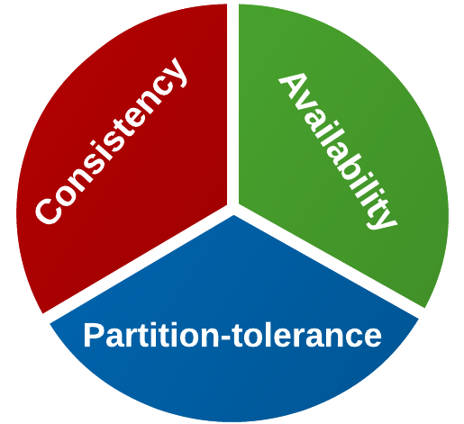Consistency
Across all nodes in the system, the data is consistent (they see the same state of the data).
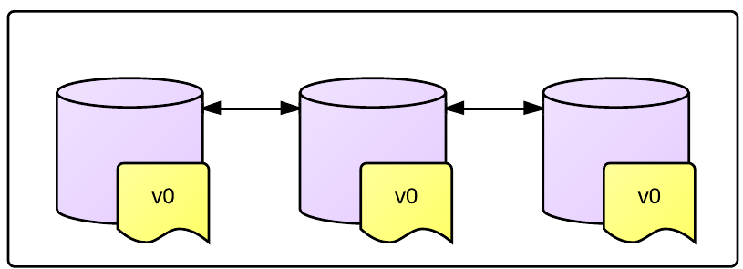
Availability
All operations on the data store eventually return something. It's "available" for writes, etc, for non-failing nodes.
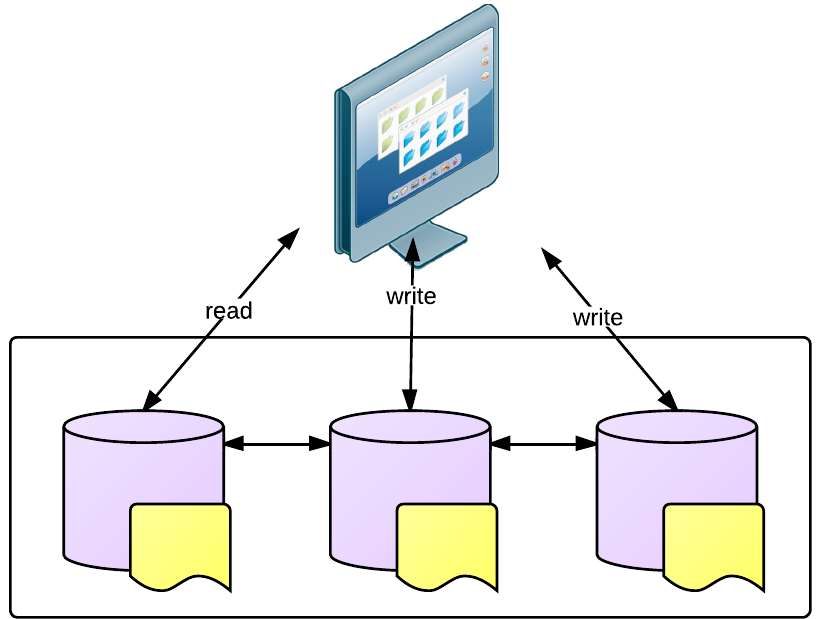Partition-tolerance
Despite some communication failures, or node crashes, service still performs as expected.
Networks fail sometimes, we still want systems that can withstand those failures. Same applies to individual nodes (from the system's view, a node failure is no different than a network failure)
Examples
Perfect World - No Partitions
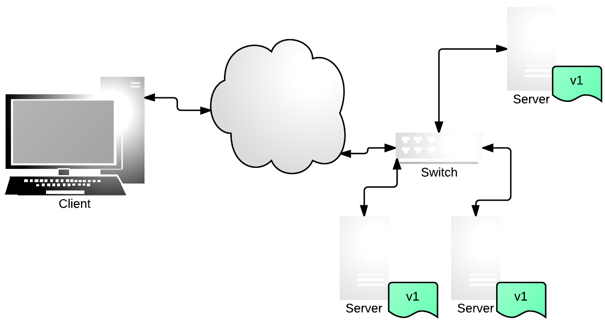Perfect World - No Partitions
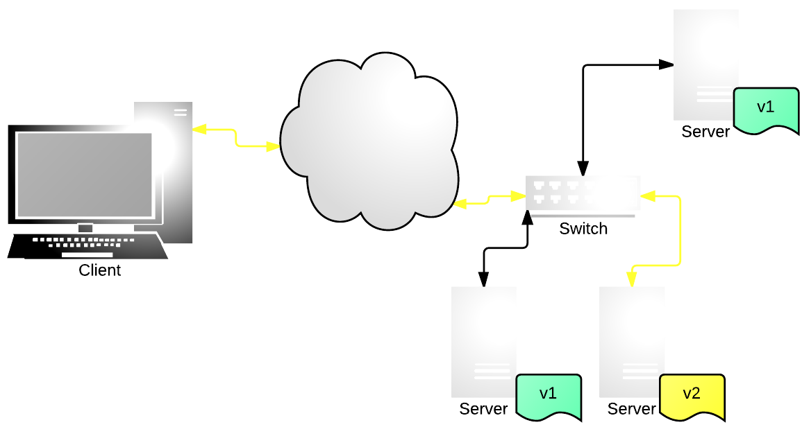Perfect World - No Partitions
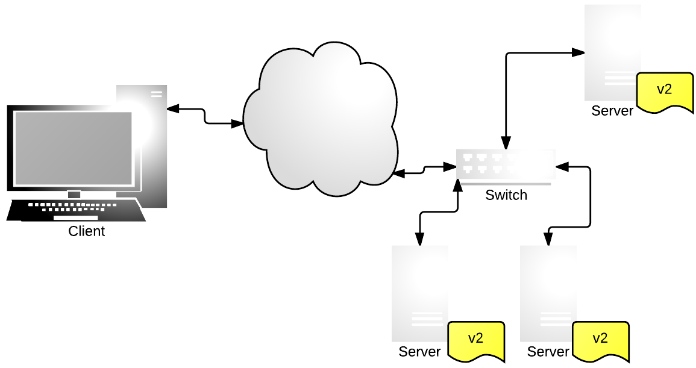Perfect World - No Partitions
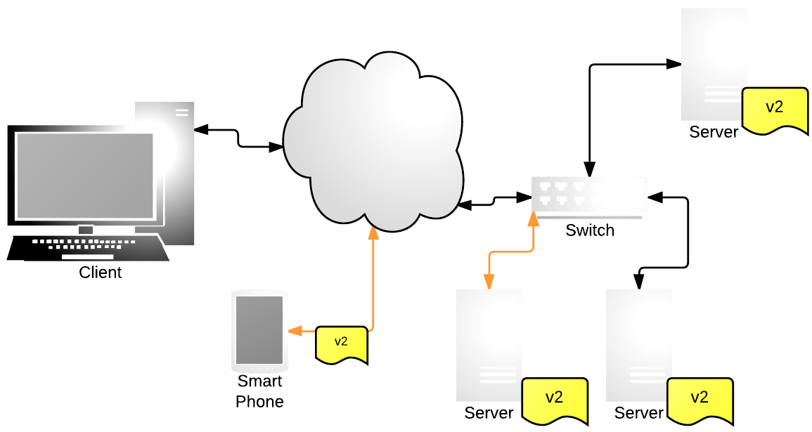Reality - Partitions
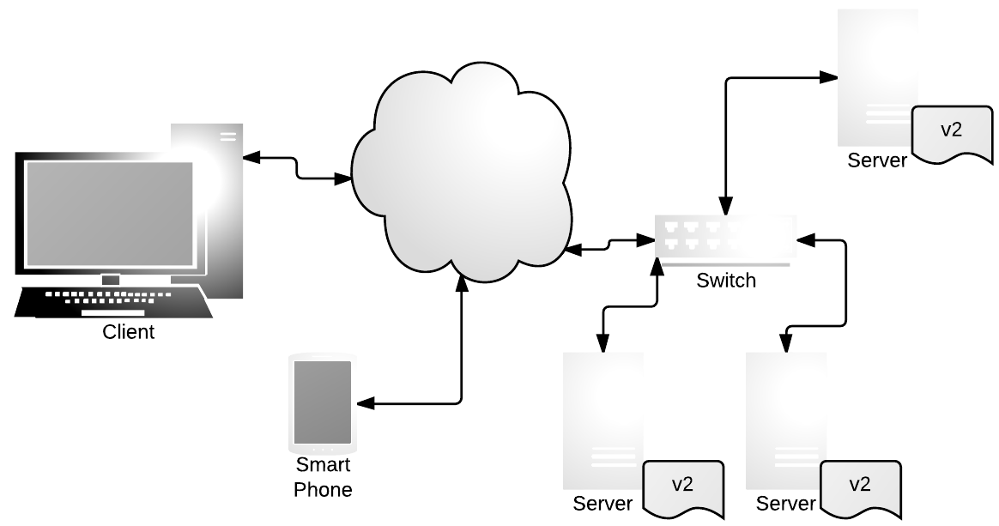Reality - Partitions w/Availability
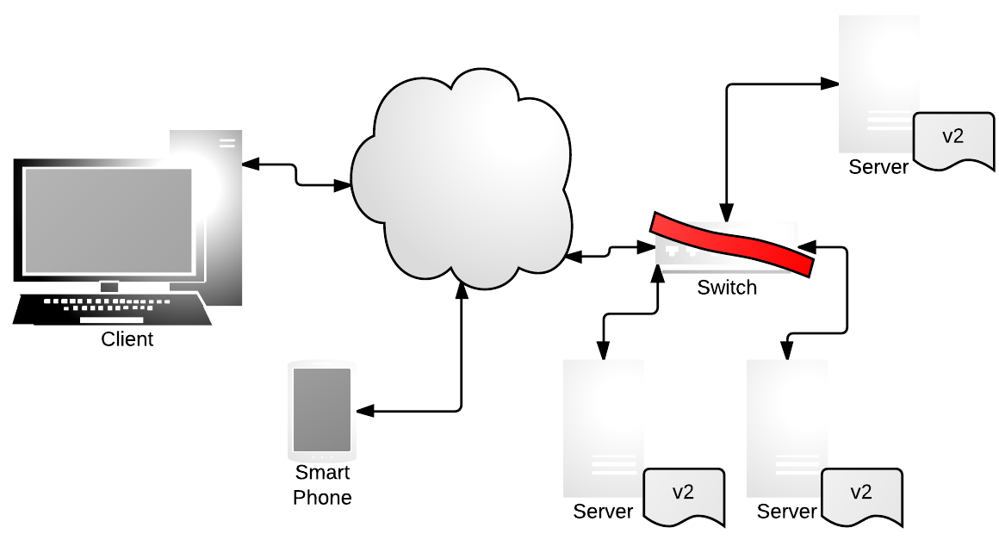Reality - Partitions w/Availability
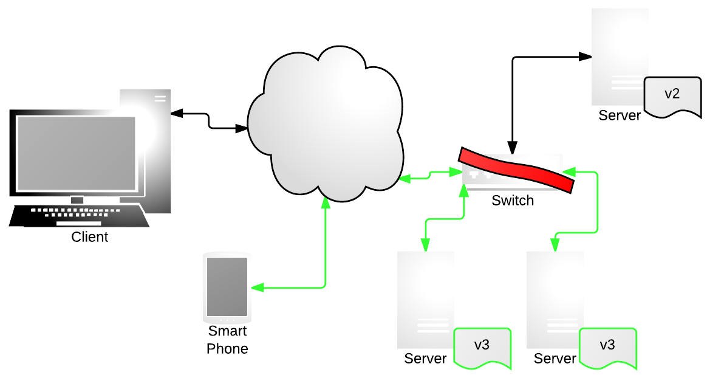Reality - Partitions w/Availability
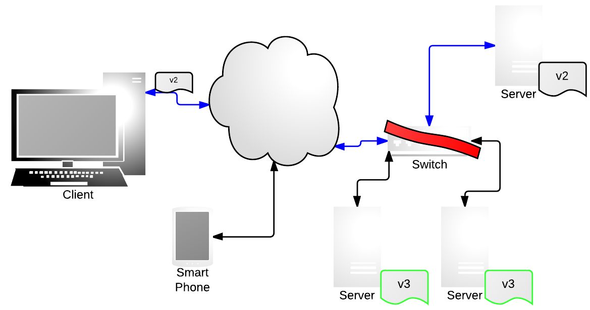Reality - Partitions
Reality - Partitions
Reality - Partitions w/Consistency
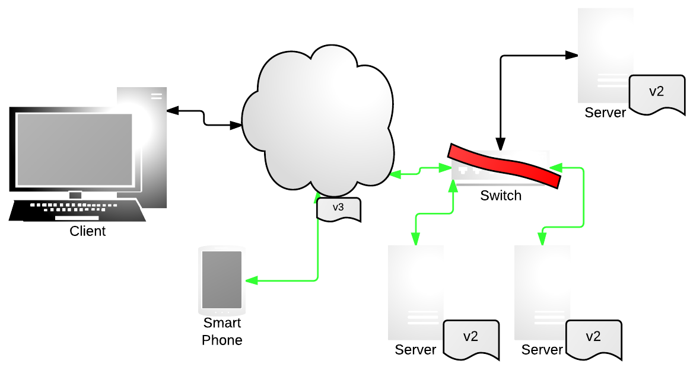Reality - Partitions w/Consistency
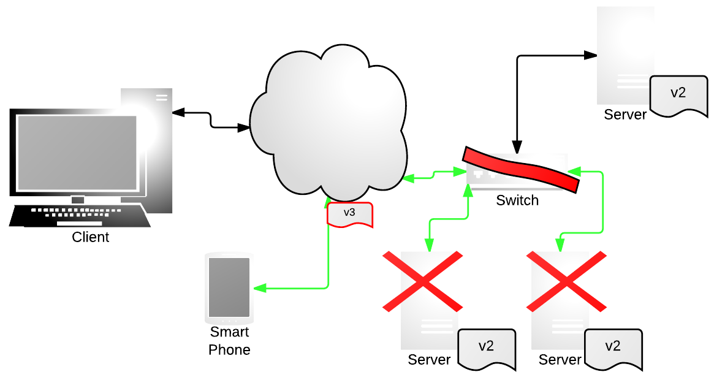CAP Theorem Implications
In an asynchronous network, with a distributed system, it is impossible to implement a "read/write" data object that guarantees the following properties:
- Availability in all normal situations
- Atomic Consistency in all normal situations in which no messages are lost*.
CAP Theorem Implications
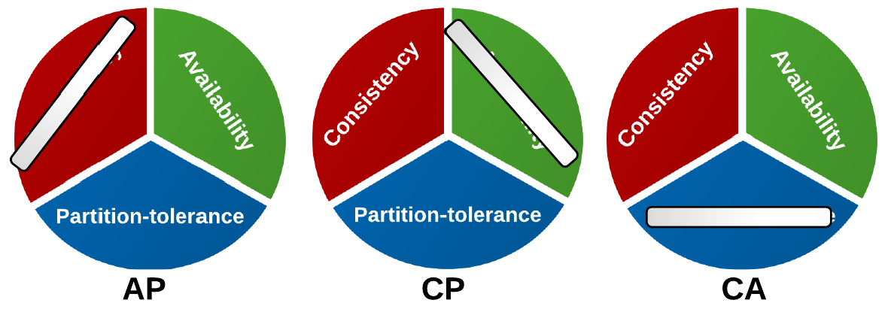Where does your system land?

Systems
MongoDB

MongoDB: Configurations
- Strongly Consistent by default. Single-master system, with optional secondaries.
- Secondary reads enable "eventual consistency".
- Highly configurable
WriteConcern
Specifies whether a write operation has succeeded. Write concern allows your application to detect insertion errors or unavailable mongod instances. For replica sets, you can configure write concern to confirm replication to a specified number of members. See Write Concern.~ http://docs.mongodb.org/manual/reference/glossary/#term-write-concern
MongoDB: Code Sample
var Db = require('mongodb').Db,
MongoClient = require('mongodb').MongoClient,
Server = require('mongodb').Server,
ReplSetServers = require('mongodb').ReplSetServers,
ObjectID = require('mongodb').ObjectID,
Binary = require('mongodb').Binary,
GridStore = require('mongodb').GridStore,
Grid = require('mongodb').Grid,
Code = require('mongodb').Code,
BSON = require('mongodb').pure().BSON,
assert = require('assert');
var db = new Db('test', new Server('locahost', 27017));
db.open(function(err, db) {
// Fetch a collection to insert document into
var collection = db.collection("simple_document_insert_with_function_safe");
// Insert a single document
collection.insert({hello:'world'
, func:function() {}}, {w:1, serializeFunctions:true}, function(err, result) {
assert.equal(null, err);
// Fetch the document
collection.findOne({hello:'world'}, function(err, item) {
assert.equal(null, err);
assert.ok("function() {}", item.code);
db.close();
})
});
});
w, {Number/String, > -1 || ‘majority’ || tag name} the write concern for the operation where < 1 is no acknowlegement of write and w >= 1, w = ‘majority’ or tag acknowledges the write~ http://mongodb.github.io/node-mongodb-native/api-generated/collection.html
Cassandra
Cassandra: Overview
- Favors Availability
- Tune the settings, but tradeoff Latency vs Consistency
- No row locking, but stronger levels of consistency with increased amounts of latency
- Atomic writes at the row level; all columns are updated (written) or none are.
Cassandra: Write Consistency Levels
| Level | Description |
|---|---|
| ANY | A write must be written to at least one node. If all replica nodes for the given row key are down, the write can still succeed once a hinted handoff has been written. Note that if all replica nodes are down at write time, an ANY write will not be readable until the replica nodes for that row key have recovered. |
| ONE | A write must be written to the commit log and memory table of at least one replica node. |
| ... | ... |
| ALL | A write must be written to the commit log and memory table on all replica nodes in the cluster for that row key. |
Cassandra
On writes, attempt is made to write the row for all replicas responsible for that row.
If those replica nodes are not available (partitions, etc), then a "hint" is stored on one node that instructs it to update the replicas when they come back up.
Cassandra - Example
SELECT purchases FROM SALES
USING CONSISTENCY QUORUM
WHERE customer_id = 7
Consistency is decided on each read and write, it's not a system/global setting. You decide the level of consistency per action.
What this means to us
As engineers, we must decide the level of consistency and availability we need.
Not all "NoSQL" systems are the same, each must be evaluated for each requirement/need.
There is no free lunch, but you can minimize the symptoms with careful decisions and configurations.
Learn More...
- Brewer's PODC Keynote: http://www.eecs.berkeley.edu/~brewer/cs262b-2004/PODC-keynote.pdf
- Cloudera CAP Confusion: http://blog.cloudera.com/blog/2010/04/cap-confusion-problems-with-partition-tolerance/
- IDC 2012 CAP Theorem Slideshare: http://www.slideshare.net/YoavFrancis/cap-theorem-theory-implications-and-practices